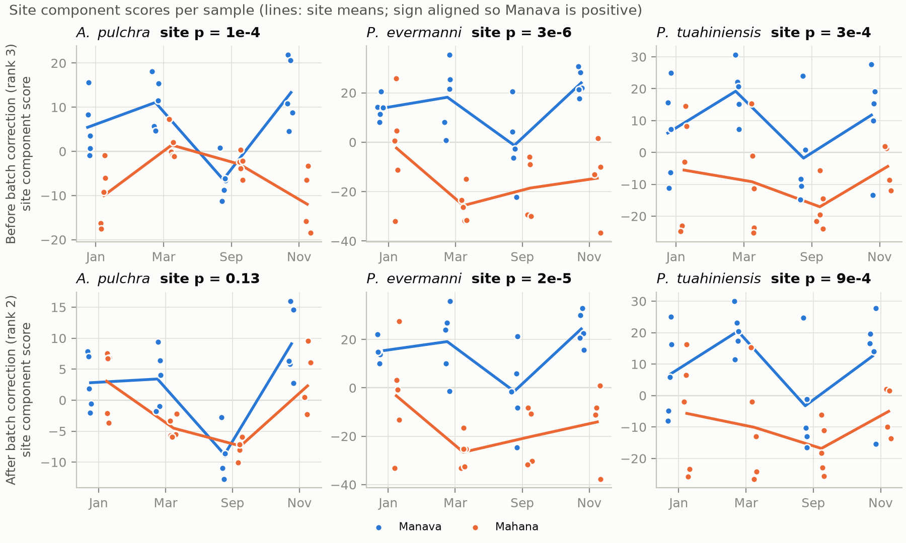
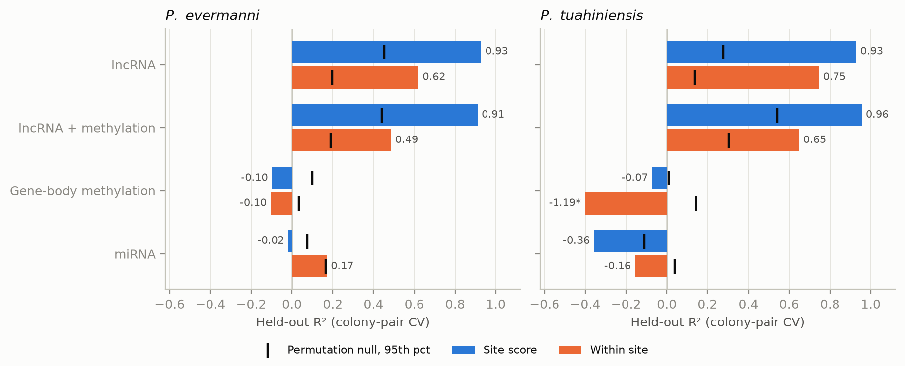
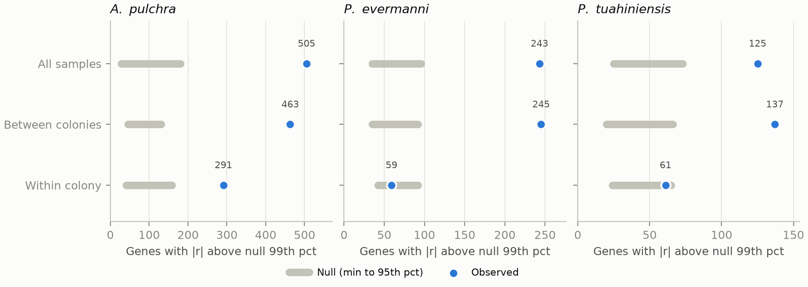
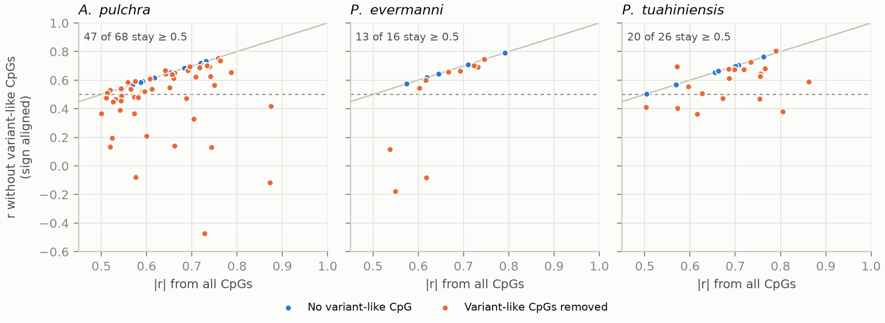

![]()
What this is
workflow-stdm is the clean, reproducible version of the workflow from the 2026 eScience talk:
- Decompose gene expression with sparse tensor decomposition (Barnacle sparse CP).
- Predict the components from epigenetic layers with elastic net.
It runs on the E5 MOSAiC data: Acropora pulchra, Porites evermanni and Pocillopora tuahiniensis, with 10 colonies each (5 at Manava, 5 at Mahana) sampled four times in 2020. Every input comes from the URLs listed on the MOSAiC site, cached with checksums. Each step is a stdm command, and the full record is in the repo’s README and PLAN.
This post covers phases 3–5. Post 97 took a different route on the same data (variance partitioning, within-colony coupling, WGCNA). Where the two overlap, they agree.
The talk’s model does not hold up
The talk used rank 35 with l1 penalties on the ortholog × colony × timepoint tensor.
- It reproduces exactly: the factors match the published ones to 1e-7. But all initialisations stopped at the iteration cap without converging, and the three missing samples were filled with zeros.
- It isn’t stable: masked properly and run to convergence, mean similarity to the published components is 0.32.
- Held-out-sample CV can’t choose a rank. Sample-level noise outweighs the shared colony and time signal at every rank.
- The l1 penalty removes whole components before it makes genes sparse.
I chose rank by split-half stability instead: refit on site-balanced colony halves and check that components reproduce. On the species-centred tensor with the top 2,000 variable genes, ranks 2–3 give the best agreement.
A site component, and an extraction-batch problem
The rank-3 model had three components:
- a site difference shared by all three species;
- an A. pulchra seasonal pattern;
- a component driven by outlier samples.
The site component looked great until I checked RNA extraction batch. Extraction dates are embedded in some sample names in the RNA metadata. In A. pulchra:
- the January 2023 extraction is all Mahana;
- 8 of 9 August 2024 samples are Manava.
After removing batch effects per gene, while keeping site and timepoint in the regression, rank 3 became degenerate, so I used rank 2.
- The site component holds in P. evermanni (p = 2e-5) and P. tuahiniensis (p = 9e-4). It is gone in A. pulchra (p = 0.13). The A. pulchra site difference was extraction batch.
- An A. pulchra timepoint component survives, but it is provisional. The 2023 extraction holds only TP1 and TP4 samples, so batch and time are hard to separate, and the component reproduces poorly across colony halves (0.51).

Interpretation: physiology, symbionts, calcification genes
I scored each sample on the components and tested the scores against 11 physiology traits and the ITS2 profiles. Each test ran on all samples, within site, and within site × timepoint.
- Physiology: 8 of 66 tests pass on all samples or within site, but none hold within site × timepoint. The A. pulchra timepoint component tracks calcification, but only because both are low at TP1 and TP4. Calcification is near zero at those timepoints in all three species, which needs checking.
- ITS2: no associations.
- Calcification genes: not enriched among the top loadings of either component.
- GO slim (on the model before batch correction): the A. pulchra seasonal component is dominated by nucleolus, RNA binding and mRNA metabolism. That is a ribosome-biogenesis signature that also shows up with RNA-quality differences, consistent with the batch confounding.
Elastic net: what predicts the site component?
stdm elastic-net predicts each sample’s site-component score from miRNA, lncRNA and gene-body methylation, per species.
- Validation: each fold holds out one colony from each site (all 25 pairs), so no colony is in training and test at once. A random 80/20 split of samples would put the same colony on both sides and inflate accuracy.
- Two targets: the score itself, and the score within site (what’s left after the site difference).
- Null: 50 permutations shuffling colonies within site.
- Stable features: stability selection against injected noise features.
| Predictors | Peve | Peve within site | Ptua | Ptua within site |
|---|---|---|---|---|
| Site-mean baseline | ~0.4 | 0 | ~0.1–0.2 | 0 |
| lncRNA | 0.93 | 0.62 | 0.93 | 0.75 |
| Gene-body methylation | −0.10 | −0.11 | −0.07 | −1.19 |
| miRNA | −0.02 | 0.17 | −0.36 | −0.16 |
Values are held-out R².

Black ticks mark the 95th percentile of the permutation null. The P. tuahiniensis methylation bar is clipped at −0.4; its label shows the actual value.
lncRNA predicts almost perfectly, but it isn’t telling us about regulation:
- The site component is lncRNA’s own leading axis. lncRNA PC1 correlates −0.91 with the score in P. evermanni.
- Technical covariates don’t explain it. Removing library size, RNA concentration, plate and batch leaves the within-site prediction (R² 0.32 and 0.75).
- Gene-expression axes do. Removing the leading gene-expression PCs removes all of it.
- The site component isn’t special. lncRNA predicts other gene-expression PCs just as well (R² 0.5–0.86).
lncRNA and genes come from the same libraries and move along the same few axes. With these data I can’t tell regulation from shared response or library effects.
Methylation is the only layer measured on a separate assay, and it predicts nothing.
Gene by gene: methylation vs its own expression
The question gets sharper at the gene level: does a gene’s own body methylation track its expression? stdm cis-meth tested this at two levels, using a colony-permutation null with 200 permutations:
- between colonies: colonies compared at the same site and timepoint;
- within colony: changes over time, after removing colony means.
| Apul | Peve | Ptua | |
|---|---|---|---|
| Between colonies, genes at q < 0.1 | 151 | 77 | 35 |
| Within colony, genes at q < 0.1 | 12 | 1 | 0 |

- Between colonies, coupling is real in all three species. There are 3–6× more strong correlations than expected. They are mostly positive and mostly in weakly methylated genes whose methylation varies more than average.
- Over time within a colony there is almost nothing, a few A. pulchra genes at most. Post 97 found the same thing and traced the A. pulchra excess to one sample-level axis.
- The component genes are no more coupled than other genes.
Is the between-colony coupling just genotype?
Each colony is a genet, so a sequence difference could move both measurements. A C/T mutation that destroys a CpG reads as unmethylated in that colony at every timepoint. stdm cpg-check used the CpG-level WGBS files to flag CpGs with that pattern. It then re-tested each coupled gene without those CpGs, and without its single most influential CpG.
| Apul | Peve | Ptua | |
|---|---|---|---|
| Coupled genes reproduced from CpG data | 68 | 16 | 26 |
| Still coupled without variant-like CpGs | 47 | 13 | 20 |
| Still coupled without the top CpG | 57 | 14 | 22 |
| Variant-like CpGs, hits vs matched controls | 18.5% vs 9.3% | 9.9% vs 7.8% | 4.8% vs 4.6% |

Each point is a coupled gene that reproduces from the CpG data. Points on the diagonal are unchanged by removing variant-like CpGs; the dashed line is |r| = 0.5.
- In most coupled genes the signal is a gene-wide shift, not one site switched off.
- In A. pulchra, genotype contributes: variant-like CpGs are twice as common in its coupled genes.
- Not ruled out: heterozygous variants and other genetic effects on methylation. Those need genotype calls from the raw WGBS reads.
Note added after reading post 97 again:
- Clone pairs. Two pairs of A. pulchra colonies are clones: ACR-145 (Manava) with ACR-265 (Mahana), and ACR-150 (Manava) with ACR-237 (Mahana). The gene-level and CpG tests here count each pair as two independent colonies, so the A. pulchra between-colony results are probably a little overstated. The A. pulchra genotype signal above may partly reflect these pairs. The elastic net ran only on P. evermanni and P. tuahiniensis, so it is unaffected.
- SNP calls already exist. Post 97’s mpileup-based calls from the WGBS reads are a more direct genotype check than the CpG-pattern flag used here. The next step is to rerun the A. pulchra tests with one colony per genotype, and to drop CpGs that overlap called SNPs.
Where this leaves things
- Expression: a real site difference in P. evermanni and P. tuahiniensis. The A. pulchra site and season patterns are tangled with extraction batch.
- Regulatory layers: none explains the site component independently.
- lncRNA mirrors the transcriptome.
- miRNA shows almost nothing.
- Gene-body methylation tracks expression as stable colony differences, partly genetic in A. pulchra, and barely at all over time.
- The talk’s narrative, with many sparse components predicted by epigenetic features, doesn’t survive proper rank selection, masking of missing samples, and colony-level validation.
Questions for the lab
- Extraction batches: do the dated RNA sample names (2021–22, 2023-01, 2024-08) really mark extraction batches? Are the undated, numbered ones one earlier batch? Everything about A. pulchra depends on this.
- Calcification: are the near-zero TP1 and TP4 calcification values real, or a measurement difference?
- POR-73-TP2: its RNA concentration is recorded as 0.0 ng/µL. Is that a real reading?
- ACR-225-TP1: it is in the gene-methylation table but missing from the merged CpG file. Was it dropped on purpose?
Next
- Metabolomics and lipidomics against the site component. These are independent assays, so they test whether the site difference reaches metabolism.
- Rerun the A. pulchra methylation–expression tests with one colony per genotype, using post 97’s SNP calls to drop SNP-overlapping CpGs.